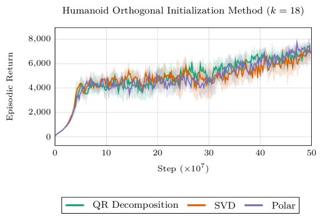
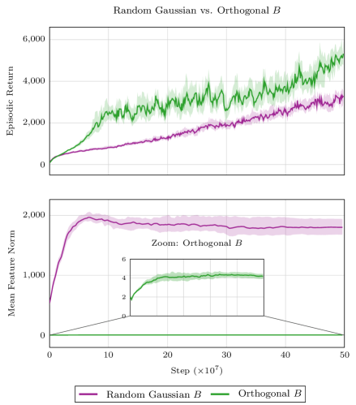
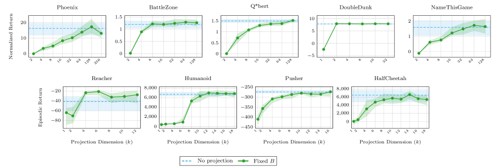

This paper shows that inserting a fixed orthonormal projection bottleneck into deep RL architectures can compress representations to extremely low dimensions while matching or improving performance, providing a lightweight, architecture-agnostic inductive bias for low-dimensional structure.
本文提出了一种简单且与架构无关的方法，通过在深度强化学习网络中插入固定的正交投影瓶颈，将表示压缩到极低维度，同时保持甚至提升性能。该方法为低维结构提供了轻量级的归纳偏置，并支持了强化学习中的流形假设。
Deep Note — orthogonal-bottleneck-rl
Key Takeaways - Fixed orthogonal bottlenecks can compress RL representations to very low dimensions without performance loss. - The minimal sufficient bottleneck dimension depends more on environment complexity than on encoder width. - Orthogonal bottlenecks stabilize feature norms and increase effective rank compared to learned projections. - Theoretical proof shows that if the optimal value function is linearly realizable with intrinsic rank r, a bottleneck of dimension k >= r preserves expressivity and gradient dynamics.
0) Metadata
- Title: Learning in Low-Dimensional Subspaces: Orthogonal Bottlenecks for Reinforcement Learning
- Alias: orthogonal-bottleneck-rl
- Authors: Aleksandar Todorov, Matthia Sabatelli
- arXiv ID: 2605.26012
- Published:
- Links:
- Abs: https://arxiv.org/abs/2605.26012
- HTML: https://arxiv.org/html/2605.26012v1
- PDF: https://arxiv.org/pdf/2605.26012
- Tags: low-dimensional-representations, orthogonal-bottleneck, reinforcement-learning, manifold-hypothesis, representation-learning
- Domains: system_safety
- Rating: 4/5 (base 1 + quality 2 + observation 1)
1) Why-read
This paper shows that inserting a fixed orthonormal projection bottleneck into deep RL architectures can compress representations to extremely low dimensions while matching or improving performance, providing a lightweight, architecture-agnostic inductive bias for low-dimensional structure.
2) CRGP
C — Context
Deep RL agents typically use high-dimensional neural representations, but there is growing evidence that task-relevant value and policy structure may be intrinsically low-dimensional (manifold hypothesis). Prior work either discovers low-dimensional structure through auxiliary objectives or compresses policy parameters post-hoc, rather than imposing it architecturally.
R — Related work
- Unsupervised skill-discovery methods construct low-dimensional latent spaces of behaviors (e.g., DIAYN, DADS).
- Policy manifold learning compresses policy parameter spaces into low-dimensional latent codes (e.g., Mutti et al., Tenedini et al.).
- Orthogonal weight matrices improve gradient conditioning in deep networks (e.g., Saxe et al., Hu et al.).
- Contrastive and auxiliary objectives for learning compact latent state representations in RL (e.g., CURL, SPR).
G — Gap
Existing approaches for low-dimensional RL representations either require auxiliary objectives, pretraining, or post-hoc compression. There is no simple, architecture-agnostic method that imposes a low-dimensional subspace directly at the representation level without changing the RL algorithm or training objective.
P — Proposal
The paper inserts a fixed orthonormal projection matrix B (with B^T B = I_k) between the encoder and downstream heads, constraining features to a k-dimensional subspace. The key insight is that this fixed orthogonal bottleneck preserves expressivity when k exceeds the intrinsic rank of the optimal value function, and it stabilizes representation geometry without auxiliary losses.
---
4) Experiments
Main results
On Classic Control, Atari, Brax MuJoCo, and multi-task Meta-World benchmarks, performance is typically recovered once bottleneck dimension exceeds a small task-dependent threshold (e.g., k=2-8 for many Atari games, k=4-16 for MuJoCo). In some cases, performance slightly improves over the full-dimensional baseline.
Ablation
Fixed orthogonal bottlenecks stabilize feature norms and achieve higher effective rank compared to learned (trainable) projections, which can lead to representation collapse and instability in some regimes.
Limitations
['The theoretical analysis relies on a linear realizability assumption which may not hold in complex deep RL settings.', 'The optimal bottleneck dimension is task-dependent and requires tuning per environment.', 'The method is evaluated primarily on value-based and actor-critic methods; applicability to other RL paradigms (e.g., model-based) is not explored.']
5) Why it matters
- Provides a principled, lightweight method to enforce low-dimensional representations in RL without changing the learning algorithm.
- Supports the manifold hypothesis in RL by showing that representations can be compressed to very low dimensions while preserving performance.
- Offers a practical tool for improving representation stability and interpretability in deep RL agents.
6) Next steps
- [ ] Test orthogonal bottlenecks in offline RL and model-based RL settings.
- [ ] Investigate automatic selection of bottleneck dimension based on effective rank or other diagnostics.
- [ ] Combine orthogonal bottlenecks with contrastive or reconstruction objectives for even richer representations.
- [ ] Apply to multi-task and transfer learning scenarios to measure cross-task representation reuse.
7) Scoring
4/5 = base 1 + quality 2 + observation 1
低维子空间中的学习：用于强化学习的正交瓶颈
主要结论 - 固定的正交瓶颈可以将强化学习表示压缩到非常低的维度，而不会损失性能。 - 最小充分瓶颈维度更多地取决于环境复杂性，而非编码器宽度。 - 与可学习的投影相比，正交瓶颈能稳定特征范数并提高有效秩。 - 理论证明表明，如果最优值函数具有内在秩r，则维度k≥r的瓶颈可以保持表达能力和梯度动力学。
1) 阅读理由
本文的关键主张是，通过插入固定的正交投影瓶颈，可以在不改变学习算法的情况下强制低维表示，关键观察是这种瓶颈在维度超过最优值函数内在秩时能保持性能并稳定表示几何。
2) CRGP（背景 / 相关工作 / 差距 / 方案）
上下文：深度强化学习智能体通常使用高维神经表示，但越来越多的证据表明任务相关的值和策略结构本质上是低维的（流形假设）。先前的工作要么通过辅助目标发现低维结构，要么事后压缩策略参数，而不是在架构上施加低维性。相关工作：无监督技能发现方法构建行为的低维潜在空间（如DIAYN、DADS）；策略流形学习将策略参数空间压缩为低维潜在编码（如Mutti等人、Tenedini等人）；正交权重矩阵改善深度网络中的梯度条件（如Saxe等人、Hu等人）；对比和辅助目标用于学习强化学习中的紧凑潜在状态表示（如CURL、SPR）。差距：现有的低维强化学习表示方法要么需要辅助目标、预训练，要么需要事后压缩。目前没有一种简单、与架构无关的方法可以直接在表示层面施加低维子空间，而无需改变强化学习算法或训练目标。提案：本文在编码器和下游头之间插入一个固定的正交投影矩阵B（满足B^T B = I_k），将特征约束到k维子空间。关键见解是，当k超过最优值函数的内在秩时，这种固定的正交瓶颈能保持表达能力，并在无需辅助损失的情况下稳定表示几何。
3) 实验
在Classic Control、Atari、Brax MuJoCo和多任务Meta-World基准测试中，一旦瓶颈维度超过一个小的任务相关阈值（例如，许多Atari游戏k=2-8，MuJoCo k=4-16），性能通常可以恢复。在某些情况下，性能甚至比全维度基线略有提升。
消融实验
固定的正交瓶颈能稳定特征范数，并实现比可学习（可训练）投影更高的有效秩，而可学习投影在某些情况下可能导致表示崩溃和不稳定性。
局限性
理论分析依赖于线性可实现性假设，这在复杂的深度强化学习设置中可能不成立。最优瓶颈维度是任务相关的，需要针对每个环境进行调整。该方法主要基于值函数和演员-评论家方法进行评估，尚未探索其在其他强化学习范式（如基于模型的方法）中的适用性。
4) 重要性
- 提供了一种原则性且轻量级的方法，无需改变学习算法即可在强化学习中强制低维表示。
- 通过展示表示可以压缩到极低维度而保持性能，支持了强化学习中的流形假设。
- 为深度强化学习智能体提供了一种提高表示稳定性和可解释性的实用工具。
5) 下一步
- [ ] 在离线强化学习和基于模型的强化学习设置中测试正交瓶颈。
- [ ] 研究基于有效秩或其他诊断指标自动选择瓶颈维度的方法。
- [ ] 将正交瓶颈与对比或重建目标结合，以获得更丰富的表示。
- [ ] 应用于多任务和迁移学习场景，以衡量跨任务表示的复用情况。


![Figure 3 : Bottleneck manifolds for Acrobot-v1 (DQN, top) and Freeway-MinAtar (PPO, bottom) with a fixed orthogonal bottleneck of size k = 2 k=2 . Each point is a visited state-action pair encoded into ( h [ 0 ] , h [ 1 ] ) (h[0],h[1]) , colored by the agent’s value estimates (left) or action (middle); in both tasks, representations concentrate on a thin manifold with a smooth value gradient and structured action regions. The right column shows a single evaluation episode colored by timestep: Acrobot trajectories progress largely monotonically toward higher-value regions, while Freeway trajectories repeatedly revisit parts of the manifold reflecting more reactive task dynamics.](figures/1300/fig_002.png)
![Figure 4 : Three-dimensional bottleneck embeddings for Acrobot-v1 (DQN, top) and Freeway-MinAtar (PPO, bottom) with a fixed orthogonal bottleneck of size k = 3 k=3 , colored by the agent’s value estimates. Each environment is shown from two viewing angles. In both cases, the representations concentrate near a low-dimensional structure in ℝ 3 \mathbb{R}^{3} rather than filling the volume, with slight thickness along the third coordinate. These additional variations are not strongly aligned with the value estimates, consistent with the observation that increasing k k beyond the recovery threshold does not change performance.](figures/1300/fig_003.png)
